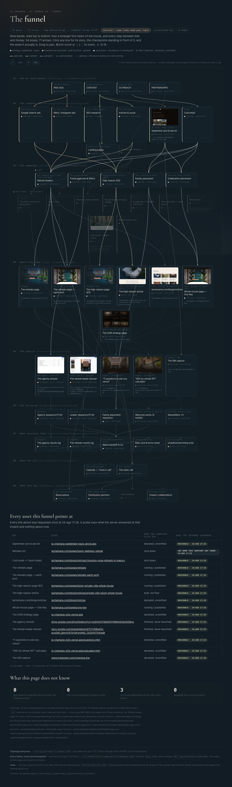
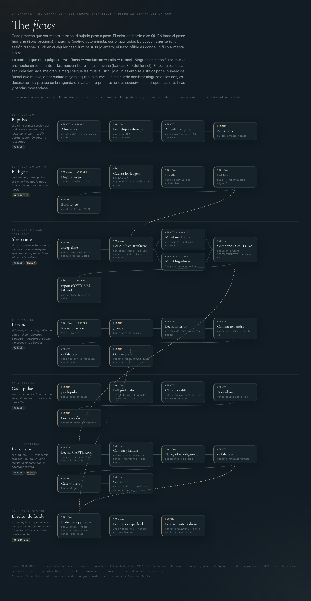

En agosto La Chamana dejó de tener campañas y pasó a tener una máquina.
La diferencia se nota en una sola cosa: en julio cada email salía porque alguien se acordó de mandarlo. En agosto salieron 327 envíos en 12 días hábiles, cada uno preparado, verificado, aprobado por una persona y anotado en un libro que no se puede editar hacia atrás. Lo mismo pasó con las páginas, con las respuestas del buzón y con la pauta. Debajo está todo lo que se construyó, todo lo que salió por los rieles y a cuánta gente llegó — y cada número dice de dónde salió.
Cómo leer este documento. Cada cifra lleva una marca: medido salió de un archivo o una base de datos en disco esta misma sesión · estimado es un cálculo hecho sobre cifras medidas · sin medir significa que no lo sabemos, y lo decimos en vez de poner un cero. Un número inventado argumenta más fuerte que uno faltante; por eso no hay ninguno.
| Palabra | Qué es |
|---|---|
| riel | Un camino completo y automatizado, de punta a punta. «El riel de outreach» va desde elegir a quién escribirle hasta dejar el envío anotado. Hay cuatro. |
| el pozo | La lista de personas y organizaciones ya investigadas, con nombre, contacto y contexto, esperando su turno. Hoy tiene 809. |
| ola | Una tanda de emails que sale junta, espaciada en el tiempo. En agosto salieron 27. |
| barrido | Una pasada por el buzón leyendo y clasificando lo que llegó. Se hicieron 100. |
| puerta de aprobación | El punto donde una persona tiene que decir que sí antes de que algo salga. Nada sale sin eso. |
| el cockpit | La pantalla desde donde se opera todo. Es interna, del equipo que ejecuta. |
| funnel | El recorrido completo, desde que alguien se entera de la casa hasta que reserva. Son nueve pasos. |
| E1 · E2 · E3 | Primer contacto, primer seguimiento, segundo seguimiento. Una secuencia de tres. |
Qué construimos
Cuatro cosas se construyeron en paralelo durante el mes: el toolkit (el software donde se opera todo), los skills (los procedimientos que la máquina sabe ejecutar), los agents (los especialistas que razonan) y la infraestructura (lo que hace que todo eso corra solo). Agosto fue el 55 % de la historia entera del proyecto: 233 de los 424 commits del toolkit se escribieron este mes.
pantallas
- 5 nacieron en agosto — Overview, el mapa del funnel, el desk de respuestas, el brief del operador y el planner
- 190 rutas de API y 93 componentes
- 3.654 pruebas automáticas y 45 chequeos de salud que corren solos
- 4 rieles de campaña · 40 acciones despachables
procedimientos
- 22 se escribieron en agosto, y los 14 del toolkit son todos de este mes
- El ritmo diario: el pulso al abrir, el cierre a la noche, la ronda los martes
- La calidad: la mesa de diseño, la revisión de marca, el estándar fotográfico
- La publicación: a Shopify, a Vercel y a Pages, probando siempre la URL viva
especialistas
- 3 nacieron en agosto — el CMO, el brief del operador y la evidencia de CRM
- El director de arte es el que más produjo: es la puerta de todo lo que se ve afuera
- El escritor de outreach firmó los 317 emails de outreach (los otros 10 de los 327 son respuestas)
- Dos oficinas de pauta esperando su llave: Google y Meta
procesos automáticos
- El cockpit vive en un servidor propio, detrás de acceso controlado
- 7 trabajos programados: backup 03:30, resumen a Slack 20:50, pauta los viernes, la ronda los martes
- Base de datos de 38 tablas con 51.566 eventos registrados
- 3 superficies de publicación conectadas
La máquina en tres capas. Una persona opera arriba; los cuatro rieles hacen el trabajo; abajo están las plataformas donde el trabajo aterriza. Las dos punteadas —Meta e Instagram— son rieles terminados que esperan un permiso, no código.
El funnel, de punta a punta
Todo el negocio cabe en nueve bandas: cómo un desconocido se entera de la casa, y cada paso hasta que reserva. El mapa completo son 54 cajas y 71 flechas, y vive en el cockpit — cada link de ahí se sondea de verdad, así que la página dice lo que el servidor contestó, no lo que nosotros creemos. Abajo, la versión corta con los números de agosto pegados a cada banda.
Las nueve bandas con lo que efectivamente pasó por cada una. Esto es el MAPA: dice qué pasos existen y qué hay en cada uno. Las bandas están todas del mismo ancho a propósito — las cuatro de arriba son categorías, no cantidades, y un dibujo que se angosta sin que el ancho signifique algo miente. Las proporciones verdaderas están en la sección 05.
El mapa vivo —donde cada caja se puede abrir y cada link se verifica solo— está en el cockpit — es interna y hace falta la sesión del equipo. Esto es lo que se ve:

Los cuatro rieles
Un riel es un camino completo: desde que se decide a quién hablarle hasta que el envío queda anotado en un libro que no se puede editar hacia atrás. Los cuatro corrieron este mes. Van con el mismo esqueleto para que se puedan comparar.
- Personas únicas alcanzadas en agosto
- 260
- Organizaciones distintas
- 255
- Olas despachadas
- 27
- Manifiestos preparados
- 45
- Primer contacto / seguimiento
- 148 / 169
- Envíos fallidos
- 1
- Días con envío
- 12
Septiembre62 seguimientos vencidos que salen la primera semana, y los 20 terceros contactos de agencias que convergen el viernes 4.
- Barridos del buzón
- 100
- Personas que contestaron
- 27
- Clasificadas como interesadas
- 13
- Conversaciones vivas
- 42
- Cerradas / esperando a ellos
- 19 / 17
- Rebotes detectados
- 17
- Direcciones dadas de baja
- 8
SeptiembreQue las respuestas salgan por el riel. Hoy la máquina captura y clasifica; el humano responde a mano, y ese toque no queda registrado.
- Impresiones
- 1.901
- Clics
- 70
- CTR
- 3,68 %
- Costo por clic
- $3,76
- Keywords en juego
- 21 → 38
- Negativos aplicados
- 254
- Inversión en Meta
- $0
SeptiembreMeta arranca: una campaña, tres públicos, USD 30 por día. Falta un solo permiso de la plataforma.
- Publicadas en vivo por el riel
- 3
- Documentos nuevos
- 30
- Páginas de campaña
- 9
- Investigaciones de SEO
- 6
- Análisis de keywords
- 5
- Imágenes nuevas
- 103
- Piezas del sistema de marca
- 14
SeptiembreEl pack de contenido del mes ya está escrito y publicado; falta rodarlo y que alimente la pauta.
Lo que hace que estos cuatro números sean confiables. Ninguno salió de que alguien se acuerde. Cada envío tiene una fila en un libro que sólo agrega y nunca edita, con hora, destinatario y resultado. 191 direcciones se verificaron antes de escribirles —no después— y 98 puertas de aprobación quedaron registradas en el mes: 72 se despacharon y 25 se rechazaron. Una de cada cuatro se frenó a propósito: la puerta no es decorativa.
Paid Media, en detalle: qué compró esa plata
Google Ads gastó USD 263 y trajo 70 clics, y ninguno terminó en una reserva. Contado en frío eso parece un mes perdido; contado bien es lo contrario. Lo que esos 263 dólares compraron fue la medición del tamaño real del mercado: la gente que busca en Google alquilar una casa entera en Tulum para un retiro son unas 650 búsquedas por mes, y de todo lo que se gastó, 0 % fue a ese público — el resto eran búsquedas de gente que quiere ir a un retiro, no alquilar la casa.
El veredicto quedó escrito: Google es una red de captura chica, no un canal de volumen. Es una conclusión con número atrás, tomada antes de poner presupuesto serio. Los 254 negativos aplicados son el cierre de esa canilla.
| Canal | Invertido | Qué pasó | Estado al 31-ago |
|---|---|---|---|
| Google Ads | $263,02 | 1.901 impresiones · 70 clics · 3 campañas en la cuenta, 1 activa | corriendo con presupuesto acotado a propósito |
| Meta | $0,00 | Página creada · términos de lead-ads firmados · formulario nacido · campaña construida 2 veces por API, en pausa | armado falta verificar el negocio |
Meta es el trabajo más grande del mes que todavía no muestra un número. Tres meses de niebla se redujeron a un solo requisito: la plataforma no acepta un medio de pago en una cuenta de un negocio sin verificar. Se midió seis veces, en tres cuentas distintas. Todo lo demás ya está: la Página, los permisos, el formulario y la campaña entera construida. Falta un ad y una tarjeta.
Dónde se puso el esfuerzo
Tres campañas hicieron todo el trabajo del mes. Una cuarta no escribió una sola línea, a propósito.
Cada campaña busca un tipo distinto de huésped, y la casa se llena distinto según cuál funcione. Las familias y las agencias son las que más se movieron; los retiros son los que compran con más anticipación.
| Campaña | A quién busca | Pozo | Contactados | Envíos | Olas |
|---|---|---|---|---|---|
| agencies-outreach | Agencias de viaje y DMCs que arman viajes de lujo | 254 | 142 | 113 | 10 |
| family-takeovers | Familias que alquilan la casa entera para reunirse | 190 | 96 | 132 | 11 |
| retreats-a | Facilitadores que dan retiros y necesitan sede | 197 | 102 | 79 | 6 |
| celebration-takeovers | Celebraciones grandes — bodas, cumpleaños redondos | 168 | 0 | 0 | 0 |
| bookings villa alta | Reservas directas de temporada alta | campaña de contenido y pauta, sin riel de email | |||
La campaña de celebraciones tiene 168 personas y no le escribió a ninguna, a propósito. 75 de esas filas están retenidas esperando una revisión editorial: son celebraciones —bodas, aniversarios, cumpleaños— y la casa no le escribe a una familia sobre su propia fiesta sin que una persona lea antes qué se le va a decir. Es una decisión, no un atasco: el riel está armado y la cola está lista para el día que esa revisión pase.
A cuánta gente llegamos
Las barras de abajo están a escala verdadera: el ancho es proporcional al número, no al diseño. Así se ve dónde se angosta el negocio de verdad.
Una precisión de fechas, porque si no dos números parecen pelearse. Los tres primeros escalones —identificados, calificados, contactados— son el estado acumulado a hoy: incluyen el trabajo de julio y de agosto. Los dos últimos son de agosto. De los 340 contactados en total, 260 recibieron su email en agosto. Es la misma gente contada en dos relojes, no dos cifras en conflicto.
Una nota sobre el 3,3 %. El CRM dice que respondieron 5 personas; el buzón dice que respondieron 27. La diferencia no es un error de cuentas: 26 de las 36 respuestas del mes salieron a mano desde el buzón de Iru y sólo 10 pasaron por el riel, y un toque que no pasa por el riel no queda anotado. El número bueno es el del buzón —27— y cerrar esa brecha es uno de los hitos de septiembre. Lo decimos porque un número que no cierra con otro es exactamente lo que hay que explicar, no esconder.
Lo que se gastó, y cuánto trabajo hubo detrás
El gasto de medios de agosto fueron 263 dólares. Todo lo demás fue trabajo.
Ese es el dinero. Lo que sigue es la otra unidad, la del esfuerzo: cuánto trabajo hizo falta para producir los 327 envíos, las 100 pasadas por el buzón, las 39 páginas y los 438 prospectos nuevos.
Un token es la unidad en que se mide el texto que un modelo lee y escribe. Los 14.672 millones impresionan y por sí solos no informan, así que va el desglose: el 95 % son relecturas — cada vez que la máquina retoma un trabajo vuelve a leer todo el contexto para no perder el hilo, igual que alguien que relee el expediente antes de seguir. Lo que efectivamente escribió fueron 76,4 millones de tokens. El día más cargado fue el 14 de agosto, con 1.069 millones.
De dónde sale esta cifra, y de dónde no. Los tokens no están en la base de datos del producto; se contaron sumando el registro de uso de cada mensaje en las 529 sesiones de los dos repositorios, filtrando por fecha de agosto. El costo de producir ese trabajo lo absorbe Both Ventures y no es gasto de La Chamana, así que no aparece acá: el único dinero que salió del negocio en agosto son los USD 263,02 de Google Ads.
Los flujos que corren todos los días
Los fines de semana no salió un solo email, y nadie apagó nada.
Esa es la prueba de que hay una máquina y no una lista de tareas: la ventana de envío es de lunes a viernes y se respeta sola. En agosto se escribieron siete procesos con horario, y el color del borde de cada paso dice quién lo hace: humano (una persona decide y aprieta), máquina (código determinista, hace siempre lo mismo) o agente (una sesión que lee y razona).
| Flujo | Cuándo | Para qué sirve | Arranque |
|---|---|---|---|
| El pulso | Diario, al abrir | La única lectura que cruza las dos mitades — marketing e ingeniería — y deja como máximo cinco decisiones | manual |
| El digest | Diario 20:50 | Cuenta los libros del día y publica a Slack: cero opinión, sólo lo que se movió | automático |
| El cierre nocturno | Noches con actividad | Cierra el día leyendo artefactos, no recuerdos, y escribe el informe fechado | manual |
| La ronda | Martes | Camina el funnel entero con datos de siete días y propone como máximo tres cambios falsables | recordatorio 09:00 |
| El pulso de pauta | Semanal | Clasifica cada búsqueda por intención y calcula si la plata va al público correcto | snapshot viernes |
| La revisión | Quincenal | Mira el producto en frío, con navegador obligatorio: captura o no pasó | manual |
| El doctor | Cada sesión | 45 chequeos que vigilan lo que nadie invoca — se pone ámbar solo cuando algo falta a su cita | automático |

Por qué esto importa más que cualquier número de arriba. Los envíos, las páginas y los prospectos son el resultado de este mes. Los flujos son lo que hace que el mes que viene no dependa de que alguien se acuerde. La prueba está en los fines de semana: 0 envíos sábado y domingo, todos los fines de semana, sin que nadie apague nada — la ventana de envío es de lunes a viernes y la máquina la respeta sola.
Cuatro cosas terminadas, esperando a una persona
El mes cierra con la máquina construida y cuatro canillas que todavía no se abrieron. Esto es lo más importante de esta página y conviene decirlo sin rodeos: ninguna de las cuatro está trabada por trabajo pendiente. Las cuatro están construidas y frenadas esperando un permiso, una revisión o una decisión. Van con nombre y fecha, porque una tarea sin dueño no es un estado, es una tarea perdida.
Meta arranca
Verificar el
negocio y cargar el medio de pago. Detrás ya está todo: una campaña, tres públicos,
USD 30 por día, cada clic termina en WhatsApp.
Depende de: Boris, con el teléfono de Gastón en vivo.
Los seguimientos vencidos
62 segundos
contactos vencidos —34 de retiros, 28 de familias— más 20 terceros contactos de agencias
que vencen el viernes 4. Es el trabajo con más chance de respuesta: ya nos leyeron una vez.
Depende de: nadie. Sale por el riel.
Las 14 de celebraciones
De 168
prospectos investigados, 14 pasaron el filtro y ninguno recibió un email. El riel
busca a quien coloca grupos —family offices, asesores de viaje privados,
concierges de villas—, nunca a la familia. Esos 14 los promovió una corrida automática
que se certificó a sí misma; el riel bordea el vertical de eventos, que está cerrado, y
por eso pide una firma humana fila por fila.
Depende de: quién ratifica esas 14 antes de que salgan.
Los DM de Instagram
171 contactos
que sólo tienen Instagram, con el riel construido y la cola armada. Techo del canal:
15 por día.
Depende de: decidir con qué cuenta y con qué firma se mandan — hoy no está decidido.
Y la pregunta incómoda, contestada. Si a Meta sólo le faltaba una tarjeta, ¿por qué no se pidió en junio? Porque durante tres meses el bloqueo estaba mal diagnosticado: la plataforma devolvía un error de país, y ese error era falso. Recién se aisló midiendo el mismo intento seis veces en tres cuentas distintas. El costo de ese diagnóstico está medido —entre 12 y 22 horas— y la lección aplicada es la que evita el segundo trimestre perdido: un bloqueo se mide, no se interpreta.
La oportunidad viva más grande que dejó el mes. Un grupo de 16 personas, la casa entera, tres noches, en octubre. Salió del riel de outreach y está en conversación. Una sola reserva de ese tamaño es la mayor que produjo el riel en su vida.
En una línea
Agosto construyó la máquina. Septiembre la pone a producir.
Lo que existe hoy y no existía el 1 de agosto: un pozo de 809 personas calificadas con nombre y contexto, cuatro rieles que llegan a ellas sin que nadie se acuerde, doce propiedades web donde aterrizan, siete procesos con horario que vigilan que todo eso pase, y un registro donde cada envío, cada aprobación y cada dólar tiene su fila. La casa se llena con una sola cosa —que la gente correcta se entere— y por primera vez hay una máquina apuntada a eso todos los días.